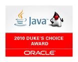

Log4JFugue earned a Duke's Choice award for Innovation.
The Duke’s Choice Awards recognize and honor extreme innovation in the world of Java technology, and are granted to the
most innovative uses of the Java platform. Because the primary judging criteria is innovation, the awards put even small
developer shops on an equal footing with multinational giants. The winners are selected by Oracle’s Java technology leadership team.
Winner for Log4JFugue
The Rock Star Program started in 2005 to recognize speakers for their outstanding session content and speaking ability.
Winner for Programming Music for Fun and Productivity
The “You’ve Got Issues” Award: Most Innovative Use of JIRA
Winner for: JIRA with Eclipse/Mylyn as a Training Tool
Motorola Bravo Award/Bonuses for leadership and quality during the creation of the CMS1000 product line and for increasing the system throughput of a
project I was not even actually assigned to, thus allowing project to meet its contracted service levels.